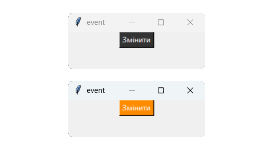

Теоретичний матеріал
Віджет Button – клас, який використовується для створення кнопок у графічному інтерфейсі. Кнопки є одними з найпоширеніших елементів управління в GUI і дозволяють користувачам виконувати певні дії при натисканні на них. Віджет Button може містити текст, зображення або обидва ці елементи, і він може бути налаштований за допомогою різних параметрів для зміни його зовнішнього вигляду та поведінки.
Загальний синтаксис:
name = Button(window, options)
де, name – ім'я кнопки, а window – ім'я вікна, на якому він розташовується
Властивості Button:
| Властивість | Значення |
|---|---|
| width | Ширина кнопки в пікселях. Якщо не вказано, кнопка буде розтягуватися по ширині текстового напису. |
| height | Висота кнопки в пікселях. Якщо не вказано, кнопка буде розтягуватися по висоті текстового напису. |
| background (bg) | Колір фону кнопки. Може бути заданий як назва кольору (наприклад, "red", "blue", "green") або як шестнадцятковий код (наприклад, "#FF0000" для червоного). |
| foreground (fg) | Колір тексту на кнопці. Може бути заданий як назва кольору (наприклад, "red", "blue", "green") або як шестнадцятковий код (наприклад, "#FF0000" для червоного). |
| borderwidth (bd) | Ширина рамки кнопки в пікселях. За замовчуванням 0, що означає відсутність рамки. |
| text | Текст, який відображається на кнопці. |
| relief | Стиль кнопки. Може мати значення: "flat", "raised", "sunken", "groove", "ridge". |
| overrelief | Стиль рамки фрейму при наведенні на нього. Може бути "flat", "raised", "sunken", "groove", "ridge". |
| state | Стан кнопки. Може мати значення: "normal", "disabled" - відключена. |
| justify | Вирівнювання тексту на кнопці. Може мати значення: "left", "right", "center". |
| font | Шрифт тексту на кнопці. Може бути заданий як назва шрифту та розмір (наприклад, "Arial 13"). |
| image | Зображення, яке відображається на кнопці. Може бути задане як об'єкт PhotoImage. |
| compound | Розташування зображення та тексту на кнопці. Може бути "left", "right", "top", "bottom", "center". |
| activebackground | Колір фону фрейму при активному стані. Може бути заданий як назва кольору або як шестнадцятковий код. |
| activeforeground | Колір тексту на кнопці при активному стані. Може бути заданий як назва кольору або як шестнадцятковий код. |
| disabledbackground | Колір фону кнопки при відключенні. Може бути заданий як назва кольору або як шестнадцятковий код. |
| disabledforeground | Колір тексту на кнопці при відключенні. Може бути заданий як назва кольору або як шестнадцятковий код. |
Обробка натискання кнопки
Для встановлення дії на кнпку в Tkinter існує властивість command та метод .bind().
Властивість command
Властивість command встановлює функцію, яка буде виконана при натисканні кнопки.
button = Button(root, text="Натисни мене", command=some_function)
де some_function – це функція, яка буде викликана при натисканні кнопки. Важливо зазначити, що при використанні властивості command не потрібно додавати дужки після назви функції, оскільки ми передаємо посилання на функцію, а не викликаємо її безпосередньо.
Метод .bind()
Метод .bind() дозволяє прив'язати певну функцію до конкретної події, такої як натискання кнопки. Це дає більше контролю над тим, які саме дії виконуються при різних типах взаємодії з кнопкою.
button = Button(root, text="Натисни мене") Після створення кнопки можна використовувати метод .bind() для прив'язки функції до події натискання:
button.bind("", some_function)
де "
Основні події
| Подія | Опис |
|---|---|
| <Button-1> або <1> | Подія натискання лівої кнопки миші. |
| <Button-2> або <2> | Подія натискання середньої кнопки миші (колесика). |
| <Button-3> або <3> | Подія натискання правої кнопки миші. |
| <Double-1> | Подія подвійного натискання лівої кнопки миші. |
| <Return> | Подія натискання клавіші Enter. |
| <Space> | Подія натискання клавіші Space. |
| <Key> | Подія натискання будь-якої клавіші на клавіатурі. |
Приклад
Розмістимо у вікні кнопку графітового кольору з текстом "Змінити", та додамо обробник події для неї, щоб при натисканні колір кнопки ставав оранжевим.
Код програми
from tkinter import *
windows = Tk()
windows.title("event")
windows.geometry("220x60")
def rc(event):
button.config(bg='#FF8C00')
button = Button(windows, text="Змінити", fg="white",bg= "#333333")
button.bind("", rc)
button.pack()
windows.mainloop()
Результат

Завдання
Створіть з віджетів Frame шахову дошку за зразком поданим нижче.
- Заголовок вікна програми: «ChessBoard»;
- Ширина та висота кожного фрейму: 50 px;
- Подумайте, який пакувальник найкраще застосувати до даного завдання та використайте його;
- Файл з кодом програми збережіть у власну папку з іменем tk_4_01.py.
Зразок: